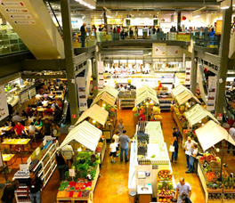
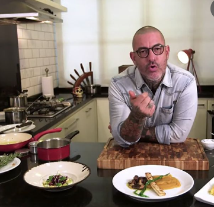
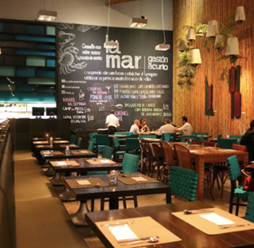
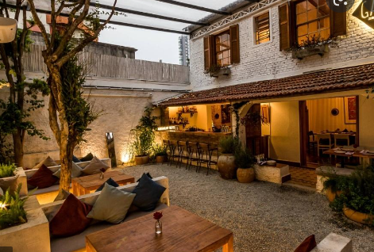

|  | Restaurantes em São Paulo |
| São Paulo é intensa. Cheia de possibilidades. Tem de tudo, para todos, especialmente no que se refere a gastronomia. São tantos restaurantes bons que fica até difícil escolher. Reuni aqui algumas indicações de amigos que moram na cidade ou que vão até lá com bastante frequência e que entendem da arte de comer bem. | |
| 29/05/2022 ás 12:35 |
|  | Mestre em inovação na cozinha |
| SAL GASTRONOMIA. O restaurante é comandado por Henrique Fogaça, jurado de MasterChef. O restaurante é famoso por sua cozinha inovadora, com produtos super frescos e vive lotado. Tem duas unidades: uma na rua Minas Gerais, 352 - Higienópolis. Telefone: (11) 3151.3085 e outra no Shopping Cidade Jardim. www.salgastronomia.com.br O Rio de Janeiro também ganhou uma unidade recentemente | |
| 25/05/2022 ás 13:35 |
|  | LA MAR o restaurante que vale a pena conhecer. |
| LA MAR. Cevicheria peruana do chef Gaston Acurio. Foi inaugurado em São Paulo quando o ceviche virou moda. Ambiente descontraído. É para dias especiais. Não é restaurante para toda hora. Gosto muito do La Mar do Peru (Lima) e de Santiago do Chile. Fica na rua Amauri, 328 - Itaim Bibi. Telefone (11) 3073.1213. |
|
| 21/05/2022 ás 11:25 |
|  | Restaurante a céu aberto |
| Se antes da pandemia os restaurantes com áreas abertas já eram requisitados pelos paulistanos, agora viraram quase um item obrigatório. Confira a seguir mais de 20 endereços que oferecem espaços externos agradáveis, como varandas e jardins, para uma gostosa refeição em São Paulo. Tem para todos os gostos, aproveite! |
|
| 18/05/2022 ás 12:01 |